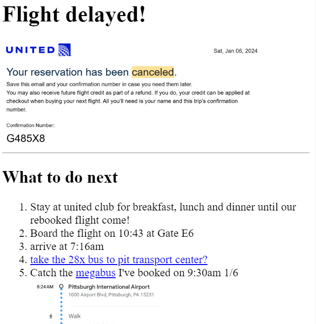

>
Yu-Wei Su's Web Portfolio
MyFavoriteMovie
This page included what I liked to watch so far.
Flight_delay instructions

practice of list, anchor, and img element
A poor student's note about what to do during flight dalay
About
Contact